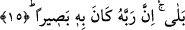

Molla Fenari’nin Fatiha Sûresi tefsirinde işâret ettiği üzere kitabı arkasından
verilecek kimse Allah’a hiç dönmeyeceği kesin inancı içindeydi. Fethu’r-Rahman’da
ifâde olunduğuna göre ise “zann” kesin bilgi anlamında değil de bizim bildiğimiz
zannetmek, beklemek, hesap etmek anlamındadır.
Bu son âyet, o kişinin dünyada iken neden sevinçli, şımarık olduğunu ifâde etmektedir.
Buna sebeb olarak da o kâfirin dünyada iken Allah’a hiç dönmeyeceği zannı içinde
olduğu gösteriliyor. Kâfirin bu zann içinde olması, bir gün gelip de âhirete gitme olayını
yalan saymasından kaynaklanmaktadır.
Âyette geçen ve dönme şeklinde tercüme edilen “yahur” fiilini ele alalım. Bu fiilin
kökü olan “el-havr” dönmek demektir. Aynı kökten yapılmış “el-mahar” dönüş yeri
anlamındadır.
İbn Abbas (r.a.)’dan rivâyet ediliyor: Ben bu “yahur” kelimesinin ne mânâya geldiğini
bedevi bir kadının kızına dön anlamına “huri, huri” dediğini işitinceye kadar
bilmiyordum. Nitekim bu kelime bir hadis-i şerifde de kullanılıyor. Peygamber
Efendimiz (s.a.) şöyle buyuruyor: “Biz iyi halden kötü hale döndürülmekten Allah’a
sığınırız.” [55] Yine bu kökten türeme “el-havari” kelimesi vardır. Bu kelimenin
türetilmesi de aynı şekilde dönmek anlamıyla ilişkilidir.
15. Oysa gerçekten Rabbi onu görüyordu.
“Oysa gerçekten” onu yaratan “Rabbi onu” karşılık gereken amellerini, ondan hiçbir
şeyin gizli kalmadığı için “görüyordu.” Şu halde onun Rabbine dönmesi, hesaba
çekilmesi ve yaptıklarının karşılığını alması kesin ve kaçınılmazdı. Çünkü Allah’ın
hikmeti gereği onun karşılıksız kötü amellerinin cezâsız bırakılması mümkün değildi.
Bu, bütün mükellefleri kötü fiiller işlemekten caydırıcı bir ifâdedir.
Vâsıtî’nin görüşüne göre âyetin mânâsı: Oysa gerçekten Rabbi onu yarattığı zaman
niçin yarattığını, ne için yoktan var ettiğini ve ona bir varlık verdiğini görüyordu. Onun
için takdir etmiş olduğu saâdet veya şakaveti, eceli, rızkı ile ilgili şeyleri bilip
görüyordu.
Âyetin başında geçen “belâ” ifâdesi, “len” kelimesinden sonra olumlu bir anlam ifâde
eder. Buna göre âyette denmiş oluyor ki durum kâfirin zannettiği gibi değil, tam tersine
onlar mutlaka Rablerine döneceklerdir.
[55]. Müslim, Hac, 426.